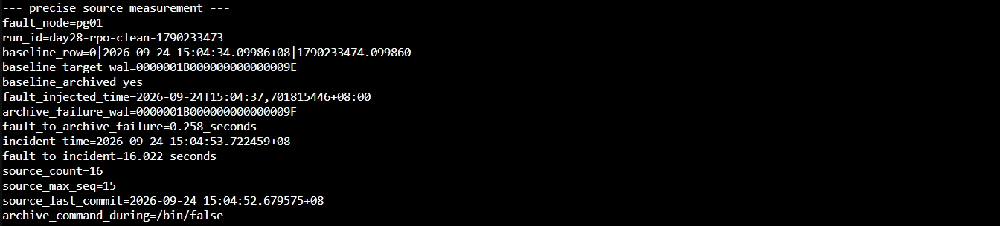
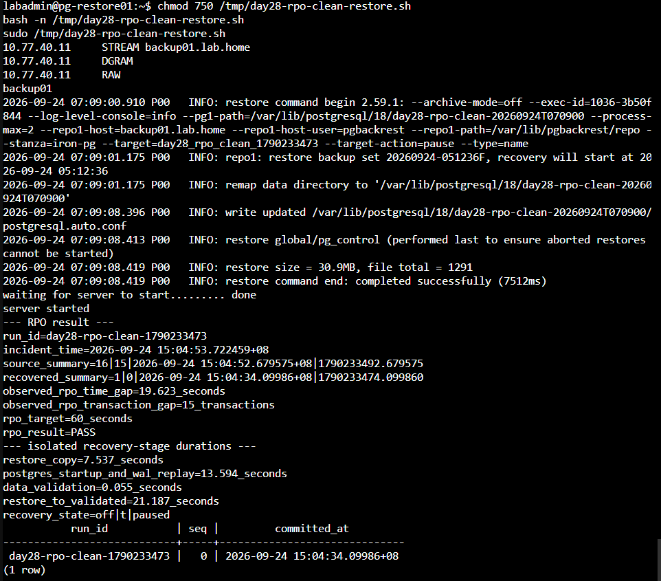
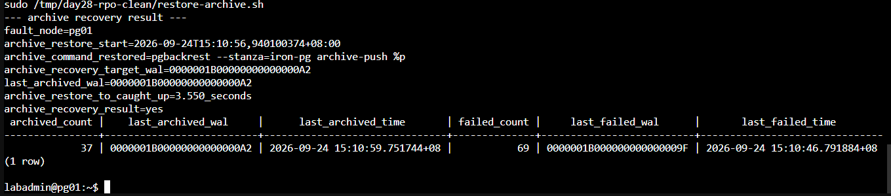
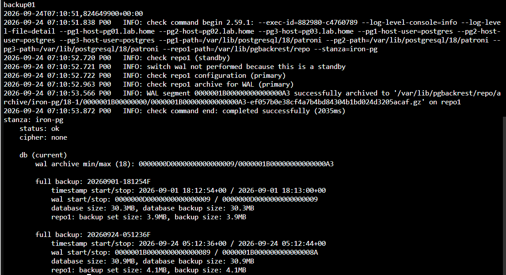

Day 28 額外實作｜量測 WAL Archive 中斷時的 RPO
本文件接續 Day 28｜PostgreSQL 資料誤刪如何復原？使用 pgBackRest、WAL Archive 與 PITR 回到指定時間點。主實作完成備份、WAL Archive 與指定時間 PITR；本額外實作建立受控的 Archive 中斷，量測事故發生時的資料缺口、隔離還原階段耗時，以及恢復 Archive 後追上 Repository 的時間。
本次測試把「基準 WAL 已封存」到「事故時間」放進同一支腳本，先驗證 Archive 停止前進，再產生測試交易，讓資料缺口只反映受控的 Archive 中斷。
本次同時取得三組彼此獨立的結果：
| 結果 | 起點與終點 | 用途 |
|---|---|---|
| RPO 資料缺口 | 事故時間 − Restore Instance 最後可見交易時間 | 與預先設定的 60 秒 RPO 比較 |
| 隔離還原階段耗時 | Restore 開始、檔案還原完成、WAL 重播到目標、資料驗證完成 | 提供災難復原分析；完整服務 RTO 另行量測 |
| Archive 恢復耗時 | 恢復 archive_command − 目標 WAL 完成封存 |
評估維運處置與 Repository 追趕時間 |
一、測試安全邊界
- 只在目前 Primary 執行來源端腳本。
- 測試期間不要執行 Switchover 或 Failover。
- 來源端腳本成功時會刻意保留
archive_command=/bin/false，直到隔離還原完成。 - 來源端腳本若中途失敗或收到中斷訊號，會自動重設
archive_command。 - pg-restore01 使用新的資料目錄與 TCP
55434，不修改正式 Patroni Cluster。 - RPO 只比較資料時間與交易序號；Restore 耗時及 Archive 追趕耗時分開記錄。
二、確認開始條件
在任一 PostgreSQL 節點確認角色
sudo -u postgres patronictl \
-c /etc/patroni/config.yml \
list -e
記住目前顯示為 Leader 的節點，後續來源端與恢復 Archive 的命令都必須在同一台節點執行。開始時應為一台 Leader、兩台 Replica / streaming，Lag 為 0。
在 backup01 確認 Repository
hostnamectl --static
date --iso-8601=ns
sudo -u pgbackrest pgbackrest \
--stanza=iron-pg \
check
sudo -u pgbackrest pgbackrest \
--stanza=iron-pg \
info
只有 Check 成功且至少存在一份有效 Full Backup 時才繼續。
三、在目前 Primary 建立補測腳本
登入目前 Leader，建立腳本：
mkdir -p /tmp/day28-rpo-clean
nano /tmp/day28-rpo-clean/run-source.sh
貼入以下完整內容：
#!/usr/bin/env bash
set -Eeuo pipefail
RUN_DIR='/tmp/day28-rpo-clean'
SOURCE_ENV="$RUN_DIR/source.env"
WRITE_LOG="$RUN_DIR/writes.log"
RPO_TARGET_SECONDS='60'
EXPECTED_ARCHIVE_COMMAND='pgbackrest --stanza=iron-pg archive-push %p'
DAY28_RPO_RUN="day28-rpo-clean-$(date +%s)"
RESTORE_POINT_NAME="day28_rpo_clean_$(date +%s)"
FAULT_ACTIVE='no'
SOURCE_COMPLETE='no'
mkdir -p "$RUN_DIR"
rm -f "$SOURCE_ENV" "$WRITE_LOG"
restore_archive_after_error() {
exit_code=$?
if [ "$FAULT_ACTIVE" = 'yes' ] && \
[ "$SOURCE_COMPLETE" != 'yes' ]; then
printf '%s\n' \
'ERROR: source measurement stopped early; restoring archive_command'
sudo -u postgres psql \
-X -d postgres -v ON_ERROR_STOP=1 \
-c 'ALTER SYSTEM RESET archive_command;' \
-c 'SELECT pg_reload_conf();' \
>/dev/null || true
fi
exit "$exit_code"
}
trap restore_archive_after_error ERR INT TERM
FAULT_NODE="$(hostnamectl --static)"
IS_IN_RECOVERY="$(
sudo -u postgres psql \
-X -d postgres -Atqc \
'SELECT pg_is_in_recovery();'
)"
if [ "$IS_IN_RECOVERY" != 'f' ]; then
echo 'ERROR: this node is not the current Primary' >&2
exit 1
fi
ARCHIVE_COMMAND_SOURCE="$(
sudo -u postgres psql \
-X -d postgres -Atqc \
"SELECT coalesce(sourcefile, '')
FROM pg_settings
WHERE name = 'archive_command';"
)"
ARCHIVE_COMMAND_BEFORE="$(
sudo -u postgres psql \
-X -d postgres -Atqc \
'SHOW archive_command;'
)"
if [[ "$ARCHIVE_COMMAND_SOURCE" == */postgresql.auto.conf ]]; then
echo 'ERROR: archive_command already has an ALTER SYSTEM override' >&2
exit 1
fi
if [ "$ARCHIVE_COMMAND_BEFORE" != \
"$EXPECTED_ARCHIVE_COMMAND" ]; then
echo 'ERROR: unexpected archive_command' >&2
printf 'actual_archive_command=%s\n' "$ARCHIVE_COMMAND_BEFORE"
exit 1
fi
sudo -u postgres psql \
-X -d appdb -v ON_ERROR_STOP=1 \
-P pager=off \
-c "SET ROLE app_owner;
CREATE TABLE IF NOT EXISTS app.rpo_probe(
run_id text NOT NULL,
seq integer NOT NULL,
committed_at timestamptz NOT NULL
DEFAULT clock_timestamp(),
committed_epoch numeric NOT NULL
DEFAULT extract(epoch FROM clock_timestamp()),
PRIMARY KEY(run_id, seq)
);
RESET ROLE;" \
>/dev/null
BASELINE_ROW="$(
sudo -u postgres psql \
-X -qAt -F '|' -d appdb -v ON_ERROR_STOP=1 \
-c "SET ROLE app_owner;
INSERT INTO app.rpo_probe(run_id, seq)
VALUES ('$DAY28_RPO_RUN', 0)
RETURNING seq, committed_at, committed_epoch;"
)"
RESTORE_POINT_LSN="$(
sudo -u postgres psql \
-X -d postgres -v ON_ERROR_STOP=1 -Atqc \
"SELECT pg_create_restore_point('$RESTORE_POINT_NAME');"
)"
BASELINE_TARGET_WAL="$(
sudo -u postgres psql \
-X -d postgres -Atqc \
"SELECT pg_walfile_name(pg_current_wal_lsn());"
)"
sudo -u postgres psql \
-X -d postgres -Atqc \
'SELECT pg_switch_wal();' \
>/dev/null
BASELINE_ARCHIVED='no'
LAST_ARCHIVED_WAL=''
for attempt in $(seq 1 90); do
LAST_ARCHIVED_WAL="$(
sudo -u postgres psql \
-X -d postgres -Atqc \
"SELECT coalesce(last_archived_wal, '')
FROM pg_stat_archiver;"
)"
if [[ "$LAST_ARCHIVED_WAL" == "$BASELINE_TARGET_WAL" || \
"$LAST_ARCHIVED_WAL" > "$BASELINE_TARGET_WAL" ]]; then
BASELINE_ARCHIVED='yes'
break
fi
sleep 1
done
if [ "$BASELINE_ARCHIVED" != 'yes' ]; then
echo 'ERROR: baseline WAL was not archived within 90 seconds' >&2
exit 1
fi
BASELINE_ARCHIVED_EPOCH="$(date +%s.%N)"
FAILED_COUNT_BEFORE="$(
sudo -u postgres psql \
-X -d postgres -Atqc \
'SELECT failed_count FROM pg_stat_archiver;'
)"
# 先把故障狀態交給 Trap 管理。即使 ALTER SYSTEM 或 Reload 失敗，
# RESET archive_command 也只會移除可能存在的本次 Override。
FAULT_ACTIVE='yes'
sudo -u postgres psql \
-X -d postgres -v ON_ERROR_STOP=1 \
-c "ALTER SYSTEM SET archive_command = '/bin/false';" \
-c 'SELECT pg_reload_conf();' \
>/dev/null
sleep 2
ARCHIVE_COMMAND_DURING="$(
sudo -u postgres psql \
-X -d postgres -Atqc \
'SHOW archive_command;'
)"
if [ "$ARCHIVE_COMMAND_DURING" != '/bin/false' ]; then
echo 'ERROR: archive fault was not activated' >&2
exit 1
fi
FAULT_INJECTED_EPOCH="$(date +%s.%N)"
FAULT_INJECTED_TIME="$(date --iso-8601=ns)"
sudo -u postgres psql \
-X -d postgres -Atqc \
'SELECT pg_switch_wal();' \
>/dev/null
ARCHIVE_FAILURE_OBSERVED='no'
ARCHIVE_FAILURE_EPOCH=''
ARCHIVE_FAILURE_WAL=''
FAILED_COUNT_AFTER=''
for attempt in $(seq 1 90); do
ARCHIVER_FAILURE_STATE="$(
sudo -u postgres psql \
-X -d postgres -At -F '|' \
-c "SELECT failed_count,
coalesce(last_failed_wal, ''),
coalesce(extract(epoch FROM last_failed_time), 0)
FROM pg_stat_archiver;"
)"
IFS='|' read -r \
FAILED_COUNT_AFTER \
ARCHIVE_FAILURE_WAL \
ARCHIVE_FAILURE_EPOCH \
<<< "$ARCHIVER_FAILURE_STATE"
if [ "$FAILED_COUNT_AFTER" -gt "$FAILED_COUNT_BEFORE" ]; then
ARCHIVE_FAILURE_OBSERVED='yes'
break
fi
sleep 1
done
if [ "$ARCHIVE_FAILURE_OBSERVED" != 'yes' ]; then
echo 'ERROR: pg_stat_archiver did not record the injected fault' >&2
exit 1
fi
for seq in $(seq 1 15); do
sudo -u postgres psql \
-X -qAt -F '|' -d appdb -v ON_ERROR_STOP=1 \
-c "SET ROLE app_owner;
INSERT INTO app.rpo_probe(run_id, seq)
VALUES ('$DAY28_RPO_RUN', $seq)
RETURNING seq, committed_at, committed_epoch;"
sleep 1
done | tee "$WRITE_LOG"
INCIDENT_RECORD="$(
sudo -u postgres psql \
-X -d postgres -At -F '|' \
-c "WITH captured AS (
SELECT clock_timestamp() AS ts
)
SELECT ts, extract(epoch FROM ts)
FROM captured;"
)"
IFS='|' read -r INCIDENT_TIME INCIDENT_EPOCH \
<<< "$INCIDENT_RECORD"
SOURCE_SUMMARY="$(
sudo -u postgres psql \
-X -d appdb -At -F '|' \
-c "SELECT count(*),
max(seq),
max(committed_at),
max(committed_epoch)
FROM app.rpo_probe
WHERE run_id = '$DAY28_RPO_RUN';"
)"
IFS='|' read -r \
SOURCE_COUNT \
SOURCE_MAX_SEQ \
SOURCE_LAST_TIME \
SOURCE_LAST_EPOCH \
<<< "$SOURCE_SUMMARY"
if [ "$SOURCE_COUNT" != '16' ] || \
[ "$SOURCE_MAX_SEQ" != '15' ]; then
echo 'ERROR: source transaction set is incomplete' >&2
exit 1
fi
{
printf 'FAULT_NODE=%q\n' "$FAULT_NODE"
printf 'DAY28_RPO_RUN=%q\n' "$DAY28_RPO_RUN"
printf 'RESTORE_POINT_NAME=%q\n' "$RESTORE_POINT_NAME"
printf 'RESTORE_POINT_LSN=%q\n' "$RESTORE_POINT_LSN"
printf 'RPO_TARGET_SECONDS=%q\n' "$RPO_TARGET_SECONDS"
printf 'BASELINE_ROW=%q\n' "$BASELINE_ROW"
printf 'BASELINE_TARGET_WAL=%q\n' "$BASELINE_TARGET_WAL"
printf 'BASELINE_ARCHIVED_EPOCH=%q\n' "$BASELINE_ARCHIVED_EPOCH"
printf 'FAULT_INJECTED_TIME=%q\n' "$FAULT_INJECTED_TIME"
printf 'FAULT_INJECTED_EPOCH=%q\n' "$FAULT_INJECTED_EPOCH"
printf 'ARCHIVE_FAILURE_EPOCH=%q\n' "$ARCHIVE_FAILURE_EPOCH"
printf 'ARCHIVE_FAILURE_WAL=%q\n' "$ARCHIVE_FAILURE_WAL"
printf 'INCIDENT_TIME=%q\n' "$INCIDENT_TIME"
printf 'INCIDENT_EPOCH=%q\n' "$INCIDENT_EPOCH"
printf 'SOURCE_SUMMARY=%q\n' "$SOURCE_SUMMARY"
} | tee "$SOURCE_ENV" >/dev/null
FAULT_TO_FAILURE_SECONDS="$(
awk \
-v start="$FAULT_INJECTED_EPOCH" \
-v finish="$ARCHIVE_FAILURE_EPOCH" \
'BEGIN { printf "%.3f", finish-start }'
)"
FAULT_TO_INCIDENT_SECONDS="$(
awk \
-v start="$FAULT_INJECTED_EPOCH" \
-v finish="$INCIDENT_EPOCH" \
'BEGIN { printf "%.3f", finish-start }'
)"
SOURCE_COMPLETE='yes'
printf '%s\n' '--- precise source measurement ---'
printf 'fault_node=%s\n' "$FAULT_NODE"
printf 'run_id=%s\n' "$DAY28_RPO_RUN"
printf 'baseline_row=%s\n' "$BASELINE_ROW"
printf 'baseline_target_wal=%s\n' "$BASELINE_TARGET_WAL"
printf 'baseline_archived=yes\n'
printf 'fault_injected_time=%s\n' "$FAULT_INJECTED_TIME"
printf 'archive_failure_wal=%s\n' "$ARCHIVE_FAILURE_WAL"
printf 'fault_to_archive_failure=%s_seconds\n' \
"$FAULT_TO_FAILURE_SECONDS"
printf 'incident_time=%s\n' "$INCIDENT_TIME"
printf 'fault_to_incident=%s_seconds\n' \
"$FAULT_TO_INCIDENT_SECONDS"
printf 'source_count=%s\n' "$SOURCE_COUNT"
printf 'source_max_seq=%s\n' "$SOURCE_MAX_SEQ"
printf 'source_last_commit=%s\n' "$SOURCE_LAST_TIME"
printf 'archive_command_during=%s\n' "$ARCHIVE_COMMAND_DURING"
printf 'source_measurement=READY_FOR_ISOLATED_RESTORE\n'
printf '%s\n' '--- transfer token ---'
base64 -w 0 "$SOURCE_ENV"
printf '\n'
儲存後檢查並執行：
chmod 750 /tmp/day28-rpo-clean/run-source.sh
bash -n /tmp/day28-rpo-clean/run-source.sh
sudo /tmp/day28-rpo-clean/run-source.sh
完成後先不要關閉這個終端，也不要恢復 archive_command。複製輸出最後一行的 Base64 Transfer Token。
下圖保留本次來源端輸出，可核對基準 WAL、Archive 故障成立時間、事故時間、交易數量與故障期間的 archive_command。

圖（一）基準 WAL 9E 已封存，Archive 故障於 0.258 秒後留下紀錄；來源端在 16.022 秒後完成 seq=1～15 並固定事故時間。
四、在 pg-restore01 還原並計算資料缺口
先把上一節的 Transfer Token 填入：
SOURCE_ENV_B64='請貼上來源端腳本輸出的完整 Base64 Transfer Token'
SOURCE_ENV_FILE='/tmp/day28-rpo-clean-source.env'
unset \
FAULT_NODE \
DAY28_RPO_RUN \
RESTORE_POINT_NAME \
RESTORE_POINT_LSN \
RPO_TARGET_SECONDS \
BASELINE_ROW \
BASELINE_TARGET_WAL \
BASELINE_ARCHIVED_EPOCH \
FAULT_INJECTED_TIME \
FAULT_INJECTED_EPOCH \
ARCHIVE_FAILURE_EPOCH \
ARCHIVE_FAILURE_WAL \
INCIDENT_TIME \
INCIDENT_EPOCH \
SOURCE_SUMMARY
sudo install \
-o "$(id -un)" \
-g "$(id -gn)" \
-m 600 \
/dev/null \
"$SOURCE_ENV_FILE"
printf '%s' "$SOURCE_ENV_B64" | \
base64 -d > "$SOURCE_ENV_FILE"
source "$SOURCE_ENV_FILE"
printf 'fault_node=%s\n' "$FAULT_NODE"
printf 'run_id=%s\n' "$DAY28_RPO_RUN"
printf 'restore_point=%s\n' "$RESTORE_POINT_NAME"
printf 'incident_time=%s\n' "$INCIDENT_TIME"
printf 'source_summary=%s\n' "$SOURCE_SUMMARY"
輸出必須是本次 day28-rpo-clean-* 樣本。若出現舊的 day28-rpo-* Run ID，表示環境檔沒有載入成功，先停止，不要執行 Restore。
建立補測腳本：
nano /tmp/day28-rpo-clean-restore.sh
貼入以下完整內容：
#!/usr/bin/env bash
set -Eeuo pipefail
source /tmp/day28-rpo-clean-source.env
RESTORE_PORT='55434'
RESTORE_DIR="/var/lib/postgresql/18/day28-rpo-clean-$(date +%Y%m%dT%H%M%S)"
RESULT_ENV='/tmp/day28-rpo-clean-result.env'
if ss -lnt | grep -qE \
"127\\.0\\.0\\.1:${RESTORE_PORT}([[:space:]]|$)"; then
echo "ERROR: TCP $RESTORE_PORT is already in use" >&2
exit 1
fi
getent ahostsv4 backup01.lab.home
sudo -u postgres ssh \
-o BatchMode=yes \
-o ConnectTimeout=5 \
pgbackrest@backup01.lab.home \
'hostnamectl --static'
sudo -u postgres pgbackrest \
--stanza=iron-pg \
info \
>/dev/null
sudo -u postgres test ! -e "$RESTORE_DIR"
sudo -u postgres install -d -m 700 "$RESTORE_DIR"
RESTORE_START_EPOCH="$(date +%s.%N)"
sudo -u postgres pgbackrest \
--stanza=iron-pg \
--pg1-path="$RESTORE_DIR" \
--type=name \
--target="$RESTORE_POINT_NAME" \
--target-action=pause \
--archive-mode=off \
restore
RESTORE_END_EPOCH="$(date +%s.%N)"
PG_START_EPOCH="$(date +%s.%N)"
sudo -u postgres /usr/lib/postgresql/18/bin/pg_ctl \
-D "$RESTORE_DIR" \
-l "$RESTORE_DIR/restore-startup.log" \
-o "-p $RESTORE_PORT -c listen_addresses=127.0.0.1 -c ssl=off -c archive_mode=off -c hba_file=$RESTORE_DIR/pg_hba.conf -c ident_file=$RESTORE_DIR/pg_ident.conf" \
start
TARGET_REACHED='no'
RECOVERY_STATE=''
for attempt in $(seq 1 90); do
RECOVERY_STATE="$(
sudo -u postgres psql \
-p "$RESTORE_PORT" -d postgres -Atqc \
"SELECT current_setting('archive_mode'),
pg_is_in_recovery(),
pg_get_wal_replay_pause_state();" \
2>/dev/null || true
)"
if [ "$RECOVERY_STATE" = 'off|t|paused' ]; then
TARGET_REACHED='yes'
break
fi
sleep 1
done
if [ "$TARGET_REACHED" != 'yes' ]; then
sudo -u postgres tail -n 100 \
"$RESTORE_DIR/restore-startup.log"
echo 'ERROR: PITR target was not reached within 90 seconds' >&2
exit 1
fi
TARGET_REACHED_EPOCH="$(date +%s.%N)"
RECOVERED_SUMMARY="$(
sudo -u postgres psql \
-p "$RESTORE_PORT" -X -d appdb -At -F '|' \
-c "SELECT count(*),
max(seq),
max(committed_at),
max(committed_epoch)
FROM app.rpo_probe
WHERE run_id = '$DAY28_RPO_RUN';"
)"
VALIDATION_END_EPOCH="$(date +%s.%N)"
SOURCE_SUMMARY_NORMALIZED="$(
printf '%s' "$SOURCE_SUMMARY" | tr -d '\\'
)"
IFS='|' read -r \
SOURCE_COUNT \
SOURCE_MAX_SEQ \
SOURCE_LAST_TIME \
SOURCE_LAST_EPOCH \
<<< "$SOURCE_SUMMARY_NORMALIZED"
IFS='|' read -r \
RECOVERED_COUNT \
RECOVERED_MAX_SEQ \
RECOVERED_LAST_TIME \
RECOVERED_LAST_EPOCH \
<<< "$RECOVERED_SUMMARY"
if [ "$SOURCE_COUNT" != '16' ] || \
[ "$SOURCE_MAX_SEQ" != '15' ] || \
[ "$RECOVERED_COUNT" != '1' ] || \
[ "$RECOVERED_MAX_SEQ" != '0' ]; then
RESULT='INVALID_SAMPLE'
else
RESULT="$(
awk \
-v incident="$INCIDENT_EPOCH" \
-v recovered="$RECOVERED_LAST_EPOCH" \
-v target="$RPO_TARGET_SECONDS" \
'BEGIN {
if ((incident-recovered) <= target) print "PASS"
else print "FAIL"
}'
)"
fi
RPO_TIME_GAP="$(
awk \
-v incident="$INCIDENT_EPOCH" \
-v recovered="$RECOVERED_LAST_EPOCH" \
'BEGIN { printf "%.3f", incident-recovered }'
)"
RPO_TRANSACTION_GAP="$((
SOURCE_MAX_SEQ - RECOVERED_MAX_SEQ
))"
RESTORE_COPY_DURATION="$(
awk \
-v start="$RESTORE_START_EPOCH" \
-v finish="$RESTORE_END_EPOCH" \
'BEGIN { printf "%.3f", finish-start }'
)"
STARTUP_REPLAY_DURATION="$(
awk \
-v start="$PG_START_EPOCH" \
-v finish="$TARGET_REACHED_EPOCH" \
'BEGIN { printf "%.3f", finish-start }'
)"
VALIDATION_DURATION="$(
awk \
-v start="$TARGET_REACHED_EPOCH" \
-v finish="$VALIDATION_END_EPOCH" \
'BEGIN { printf "%.3f", finish-start }'
)"
RESTORE_TO_VALIDATED_DURATION="$(
awk \
-v start="$RESTORE_START_EPOCH" \
-v finish="$VALIDATION_END_EPOCH" \
'BEGIN { printf "%.3f", finish-start }'
)"
{
printf 'RESTORE_DIR=%q\n' "$RESTORE_DIR"
printf 'RESTORE_PORT=%q\n' "$RESTORE_PORT"
printf 'RPO_TIME_GAP=%q\n' "$RPO_TIME_GAP"
printf 'RPO_TRANSACTION_GAP=%q\n' "$RPO_TRANSACTION_GAP"
printf 'RPO_RESULT=%q\n' "$RESULT"
printf 'RESTORE_COPY_DURATION=%q\n' \
"$RESTORE_COPY_DURATION"
printf 'STARTUP_REPLAY_DURATION=%q\n' \
"$STARTUP_REPLAY_DURATION"
printf 'VALIDATION_DURATION=%q\n' \
"$VALIDATION_DURATION"
printf 'RESTORE_TO_VALIDATED_DURATION=%q\n' \
"$RESTORE_TO_VALIDATED_DURATION"
} | sudo tee "$RESULT_ENV" >/dev/null
printf '%s\n' '--- RPO result ---'
printf 'run_id=%s\n' "$DAY28_RPO_RUN"
printf 'incident_time=%s\n' "$INCIDENT_TIME"
printf 'source_summary=%s\n' "$SOURCE_SUMMARY_NORMALIZED"
printf 'recovered_summary=%s\n' "$RECOVERED_SUMMARY"
printf 'observed_rpo_time_gap=%s_seconds\n' "$RPO_TIME_GAP"
printf 'observed_rpo_transaction_gap=%s_transactions\n' \
"$RPO_TRANSACTION_GAP"
printf 'rpo_target=%s_seconds\n' "$RPO_TARGET_SECONDS"
printf 'rpo_result=%s\n' "$RESULT"
printf '%s\n' '--- isolated recovery-stage durations ---'
printf 'restore_copy=%s_seconds\n' "$RESTORE_COPY_DURATION"
printf 'postgres_startup_and_wal_replay=%s_seconds\n' \
"$STARTUP_REPLAY_DURATION"
printf 'data_validation=%s_seconds\n' "$VALIDATION_DURATION"
printf 'restore_to_validated=%s_seconds\n' \
"$RESTORE_TO_VALIDATED_DURATION"
printf 'recovery_state=%s\n' "$RECOVERY_STATE"
sudo -u postgres psql \
-p "$RESTORE_PORT" -X -d appdb -P pager=off \
-c "SELECT run_id, seq, committed_at
FROM app.rpo_probe
WHERE run_id = '$DAY28_RPO_RUN'
ORDER BY seq;"
儲存後檢查並執行：
chmod 750 /tmp/day28-rpo-clean-restore.sh
bash -n /tmp/day28-rpo-clean-restore.sh
sudo /tmp/day28-rpo-clean-restore.sh
下圖將來源端與 Restore Instance 的摘要放在一起，並列出資料缺口、60 秒目標、判讀結果與各還原階段耗時。

圖（二）正式 Cluster 保存 16 筆測試資料，Restore Instance 只看見 seq=0。時間缺口為 19.623 秒、交易缺口為 15 筆，低於預先設定的 60 秒 RPO。
五、停止隔離 Instance
在 pg-restore01 執行：
source /tmp/day28-rpo-clean-result.env
sudo -u postgres /usr/lib/postgresql/18/bin/pg_ctl \
-D "$RESTORE_DIR" \
-m fast \
stop
確認 TCP 55434 已釋放：
ss -lnt | grep -E '127\.0\.0\.1:55434([[:space:]]|$)' || \
echo 'restore_instance_stopped=yes'
六、在原 Primary 恢復 Archive 並量測追趕時間
回到來源端腳本顯示的 fault_node。先確認該節點目前是 Primary：
source /tmp/day28-rpo-clean/source.env
hostnamectl --static
sudo -u postgres psql \
-X -d postgres -Atqc \
'SELECT pg_is_in_recovery();'
sudo -u postgres psql \
-X -d postgres -Atqc \
'SHOW archive_command;'
主機名稱必須等於 FAULT_NODE，pg_is_in_recovery() 必須為 f，archive_command 必須維持 /bin/false。任一條件不符就先停止，不要直接執行後續命令。
建立恢復腳本：
nano /tmp/day28-rpo-clean/restore-archive.sh
貼入以下完整內容：
#!/usr/bin/env bash
set -Eeuo pipefail
source /tmp/day28-rpo-clean/source.env
EXPECTED_ARCHIVE_COMMAND='pgbackrest --stanza=iron-pg archive-push %p'
CURRENT_NODE="$(hostnamectl --static)"
if [ "$CURRENT_NODE" != "$FAULT_NODE" ]; then
echo 'ERROR: run this script on the original fault node' >&2
exit 1
fi
IS_IN_RECOVERY="$(
sudo -u postgres psql \
-X -d postgres -Atqc \
'SELECT pg_is_in_recovery();'
)"
if [ "$IS_IN_RECOVERY" != 'f' ]; then
echo 'ERROR: the original fault node is no longer Primary' >&2
echo 'Restoring archive_command on this node; the sample is invalid.' >&2
sudo -u postgres psql \
-X -d postgres -v ON_ERROR_STOP=1 \
-c 'ALTER SYSTEM RESET archive_command;' \
-c 'SELECT pg_reload_conf();' \
>/dev/null
printf 'archive_command_after_role_change=%s\n' "$(
sudo -u postgres psql \
-X -d postgres -Atqc \
'SHOW archive_command;'
)"
printf 'measurement_result=INVALID_ROLE_CHANGE\n'
exit 1
fi
ARCHIVE_RESTORE_START_EPOCH="$(date +%s.%N)"
ARCHIVE_RESTORE_START_TIME="$(date --iso-8601=ns)"
sudo -u postgres psql \
-X -d postgres -v ON_ERROR_STOP=1 \
-c 'ALTER SYSTEM RESET archive_command;' \
-c 'SELECT pg_reload_conf();' \
>/dev/null
sleep 2
ARCHIVE_COMMAND_AFTER="$(
sudo -u postgres psql \
-X -d postgres -Atqc \
'SHOW archive_command;'
)"
if [ "$ARCHIVE_COMMAND_AFTER" != \
"$EXPECTED_ARCHIVE_COMMAND" ]; then
echo 'ERROR: archive_command was not restored' >&2
exit 1
fi
ARCHIVE_RECOVERY_POINT="day28_rpo_recovery_$(date +%s)"
sudo -u postgres psql \
-X -d postgres -v ON_ERROR_STOP=1 -Atqc \
"SELECT pg_create_restore_point('$ARCHIVE_RECOVERY_POINT');" \
>/dev/null
ARCHIVE_RECOVERY_TARGET_WAL="$(
sudo -u postgres psql \
-X -d postgres -Atqc \
"SELECT pg_walfile_name(pg_current_wal_lsn());"
)"
sudo -u postgres psql \
-X -d postgres -Atqc \
'SELECT pg_switch_wal();' \
>/dev/null
ARCHIVE_CAUGHT_UP='no'
LAST_ARCHIVED_WAL=''
for attempt in $(seq 1 180); do
LAST_ARCHIVED_WAL="$(
sudo -u postgres psql \
-X -d postgres -Atqc \
"SELECT coalesce(last_archived_wal, '')
FROM pg_stat_archiver;"
)"
if [[ "$LAST_ARCHIVED_WAL" == \
"$ARCHIVE_RECOVERY_TARGET_WAL" || \
"$LAST_ARCHIVED_WAL" > \
"$ARCHIVE_RECOVERY_TARGET_WAL" ]]; then
ARCHIVE_CAUGHT_UP='yes'
break
fi
sleep 1
done
if [ "$ARCHIVE_CAUGHT_UP" != 'yes' ]; then
echo 'ERROR: WAL Archive did not catch up within 180 seconds' >&2
exit 1
fi
ARCHIVE_CAUGHT_UP_EPOCH="$(date +%s.%N)"
ARCHIVE_RECOVERY_DURATION="$(
awk \
-v start="$ARCHIVE_RESTORE_START_EPOCH" \
-v finish="$ARCHIVE_CAUGHT_UP_EPOCH" \
'BEGIN { printf "%.3f", finish-start }'
)"
printf '%s\n' '--- archive recovery result ---'
printf 'fault_node=%s\n' "$FAULT_NODE"
printf 'archive_restore_start=%s\n' \
"$ARCHIVE_RESTORE_START_TIME"
printf 'archive_command_restored=%s\n' \
"$ARCHIVE_COMMAND_AFTER"
printf 'archive_recovery_target_wal=%s\n' \
"$ARCHIVE_RECOVERY_TARGET_WAL"
printf 'last_archived_wal=%s\n' "$LAST_ARCHIVED_WAL"
printf 'archive_restore_to_caught_up=%s_seconds\n' \
"$ARCHIVE_RECOVERY_DURATION"
printf 'archive_recovery_result=%s\n' "$ARCHIVE_CAUGHT_UP"
sudo -u postgres psql \
-X -d postgres -P pager=off \
-c "SELECT archived_count,
last_archived_wal,
last_archived_time,
failed_count,
last_failed_wal,
last_failed_time
FROM pg_stat_archiver;"
儲存後檢查並執行：
chmod 750 /tmp/day28-rpo-clean/restore-archive.sh
bash -n /tmp/day28-rpo-clean/restore-archive.sh
sudo /tmp/day28-rpo-clean/restore-archive.sh
下圖顯示 pgBackRest archive-push 已恢復、last_archived_wal 到達目標 WAL，以及 Archive 追趕耗時。

圖（三）恢復 pgBackRest archive-push 後，last_archived_wal 在 3.550 秒內到達目標 WAL A2。
七、在 backup01 完成最後檢查
hostnamectl --static
date --iso-8601=ns
sudo -u pgbackrest pgbackrest \
--stanza=iron-pg \
check
sudo -u pgbackrest pgbackrest \
--stanza=iron-pg \
info
最後在 backup01 重新執行 Check 與 Info，確認 iron-pg Stanza 和 Archived WAL 狀態。

圖（四）pgBackRest Check 成功、iron-pg Stanza 狀態為 ok，Archived WAL 已前進至 A3。
八、判讀規則
| 結果 | 判讀方式 |
|---|---|
rpo_result=PASS |
本次受控 Archive 中斷樣本的資料時間缺口小於或等於 60 秒 |
rpo_result=FAIL |
本次受控 Archive 中斷樣本的資料時間缺口超過 60 秒 |
rpo_result=INVALID_SAMPLE |
來源端或還原端交易集合不符合預期，本次樣本不產生 RPO 結論 |
fault_to_archive_failure |
PostgreSQL Archiver 從注入故障到留下失敗紀錄的時間 |
restore_to_validated |
隔離還原開始到資料可驗證的時間；完整 RTO 還需量測事故判斷、核准及重新開放流量 |
archive_restore_to_caught_up |
恢復 Archive 後追上明確 WAL 邊界的時間 |
資料傳遞與登入 pg-restore01 所花的時間不會進入 RPO 計算。RPO 的事故時間已由來源端腳本在完成 15 筆交易後固定記錄；隔離還原可以稍後執行。
九、實測結果
| RPO 觀察項目 | 實測結果 |
|---|---|
| RPO 目標 | 60 秒 |
| 故障注入至 Archive 留下失敗紀錄 | 0.258 秒 |
| 故障注入至模擬事故 | 16.022 秒 |
| 最後可復原測試交易 | 2026-09-24 15:04:34.099860+08 |
| 模擬事故時間 | 2026-09-24 15:04:53.722459+08 |
| 正式 Cluster／Restore Instance 最大序號 | 15／0 |
| 觀察到的時間缺口 | 19.623 秒 |
| 觀察到的交易缺口 | 15 筆 |
| RPO 判讀 | PASS |
本次 PASS 代表約 16 秒的受控 Archive 中斷樣本符合 60 秒目標。Archive 持續停止時，Repository 的復原邊界也會持續落後；監控、告警與修復流程要在 RPO 用盡前完成處置。
| 隔離還原階段 | 實測時間 |
|---|---|
| pgBackRest 還原檔案 | 7.537 秒 |
| PostgreSQL 啟動並重播 WAL 至命名還原點 | 13.594 秒 |
| 查詢並驗證資料 | 0.055 秒 |
| 從開始 Restore 到資料驗證完成 | 21.187 秒 |
21.187 秒是隔離 Restore、WAL 重播與資料驗證的階段耗時。完整服務 RTO 還要量測事故判斷、目標選擇、人工核准及重新開放流量。
恢復 archive_command 後，last_archived_wal 在 3.550 秒內到達目標 WAL A2；backup01 隨後完成 pgBackRest Check，Stanza 狀態為 ok，Archived WAL 前進至 A3。